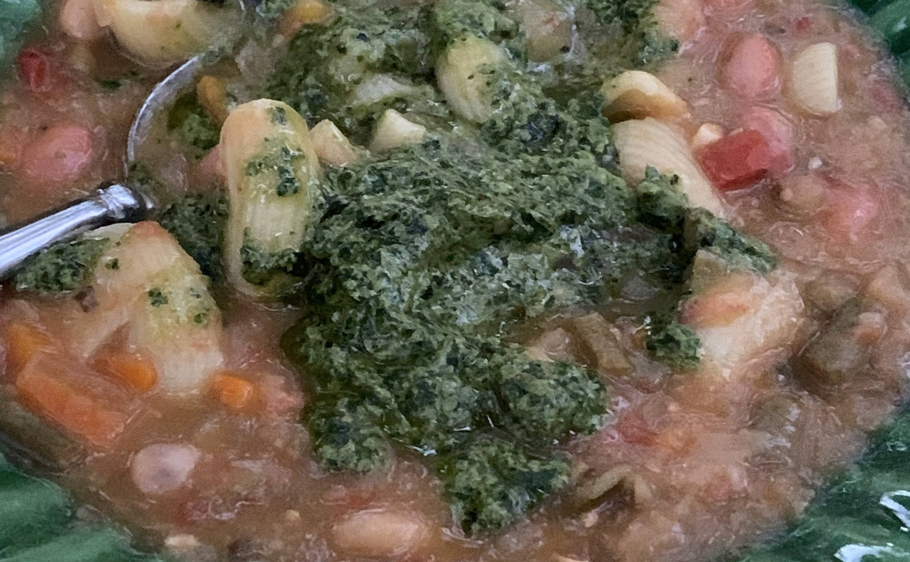

Soupe au pistou

La parte vegetale del menu: fagioli, verdure estive, pasta corta e pistou. Calda, ma pienamente estiva, come spesso accade nella cucina provenzale.

La parte vegetale del menu: fagioli, verdure estive, pasta corta e pistou. Calda, ma pienamente estiva, come spesso accade nella cucina provenzale.
Ricetta tradizionale da inserire o collegare: tonno appena cotto, sesamo, erbe e profumi mediterranei. Deve restare succoso, con il sesamo come trama più che come copertura pesante.
Pomodori maturi, ripieno sobrio, erbe e cottura lenta. Una presenza laterale ma importante: non un contorno decorativo, piuttosto un secondo accento dell'orto.